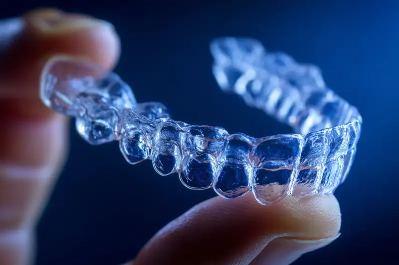
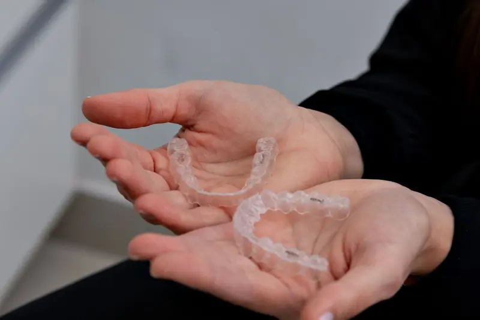
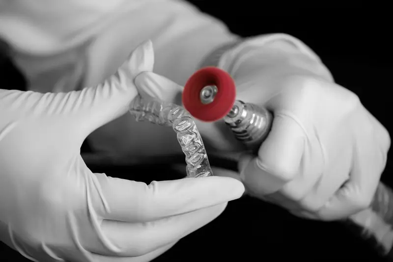

Planificamos tus alineadores y, si quieres, los fabricamos
Envías el escaneo, las radiografías y las fotos. Una técnica dedicada a ortodoncia planifica el tratamiento en 3Shape, etapa por etapa, con IPR y attachments, y tú lo revisas antes de aprobar. Recibes el STL de cada etapa para imprimir en tu consultorio o los alineadores terminados desde nuestro laboratorio en Bogotá.

Cómo funciona
El tiempo cuenta en días hábiles de Colombia, desde que el caso está completo.
Envías el caso
STL, radiografías, fotos e indicaciones en un solo formulario. Lo ideal es un ZIP con todo.
Viabilidad y valoración
Revisamos si el caso es viable y estimamos cuántos alineadores necesita. Si no sigue, es lo único que se cobra.
Planificación y revisión
Planificamos cada etapa con IPR y attachments. Lo ves, y puedes pedir hasta 2 ajustes antes de aprobar.
Entrega
El STL de cada etapa para imprimir, o los alineadores terminados si los fabricamos nosotros.
Dos formas de recibir tu caso
La planificación es la misma. Tú decides si imprimes en tu consultorio o si te los entregamos listos.

Para imprimir en tu consultorio
Si tienes impresora y termoformadora, te enviamos todo para producir en casa.
- STL de cada etapa, superior e inferior, listos para imprimir
- Reporte de IPR por etapa
- STL de la plantilla de attachments

Alineadores terminados
Los fabricamos en nuestro laboratorio de Bogotá y te los entregamos listos para el paciente.
- Modelo impreso de cada etapa
- Lámina termoformada, recortada y pulida
- Plantilla de attachments para cementarlos
- Retenedor final tipo Essix al terminar
Qué necesitamos para planificar
Con los archivos completos la valoración sale más precisa y el plan se ajusta menos.

¿No tienes escáner intraoral? Escaneamos al paciente en tu consultorio en Bogotá.
Casos de alineadores de nuestro portafolio
Planificaciones reales hechas en PRODIGY. Toca una foto para verla en grande.
Preguntas frecuentes
¿Qué incluye la planificación?
¿Con qué programa planifican?
¿Qué pasa si el caso no es viable?
¿También fabrican los alineadores?
¿Cuánto tarda la planificación?
¿Qué pasa si el paciente no avanza como se planeó?
¿Cuánto cuesta?
Envía tu primer caso de alineadores
Sube los archivos y te confirmamos por WhatsApp cuando empecemos la valoración.
⚕ La planificación digital es una propuesta técnica basada en tu indicación. La revisión, decisión y aprobación clínica final son responsabilidad del profesional tratante.